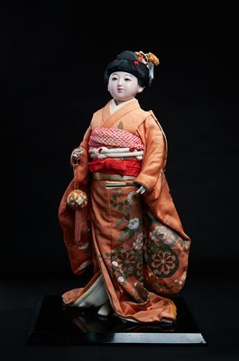

Hanasugata là tác phẩm thuộc dòng Kyō Ningyō, một trong những dòng búp bê truyền thống nổi tiếng nhất của cố đô Kyoto. Tên gọi "Hanasugata" có nghĩa là "dáng vẻ như hoa", gợi lên hình ảnh người phụ nữ Nhật Bản với vẻ đẹp thanh lịch, dịu dàng và đầy sức sống như những đóa hoa đang nở.
Tác phẩm khắc họa một thiếu nữ trong bộ kimono màu cam với những họa tiết hoa lá tinh xảo, tay cầm túi vải nhỏ và bước đi trong dáng vẻ nhẹ nhàng. Sự phối hợp hài hòa giữa màu sắc, trang phục và thần thái tạo nên nét đẹp trang nhã đặc trưng của nghệ thuật Kyoto. Mỗi chi tiết từ khuôn mặt, kiểu tóc đến từng nếp gấp của kimono đều được chế tác thủ công, thể hiện trình độ tinh xảo của các nghệ nhân.
Trong văn hóa Nhật Bản, hoa là biểu tượng của vẻ đẹp, sự thanh khiết và sức sống, đồng thời phản ánh sự chuyển mình của bốn mùa. Thông qua hình tượng người thiếu nữ trong trang phục truyền thống, Hanasugata tôn vinh vẻ đẹp của người phụ nữ Nhật Bản và tinh thần thẩm mỹ coi trọng sự hài hòa giữa con người với thiên nhiên. Đây không chỉ là một tác phẩm mỹ nghệ mà còn là biểu tượng của nét đẹp văn hóa Kyoto được gìn giữ và truyền lại qua nhiều thế hệ.
華姿は、古都・京都を代表する伝統人形のひとつである京人形の作品です。「華姿」とは「花のような姿」を意味し、咲き誇る花のように上品で、やさしく、生命力にあふれた日本女性の姿を思わせます。
本作は、精巧な草花文様の橙色の着物をまとい、小さな布の袋を手に、軽やかに歩む娘の姿を表しています。色彩、衣装、風情の調和が、京都の芸術ならではの上品な美しさを生み出しています。顔、髪型、着物のひだの一つひとつまで手作業で仕上げられ、職人の精巧な技を示しています。
日本文化において花は、美しさ、清らかさ、生命力の象徴であり、四季の移ろいも映し出します。伝統衣装をまとった娘の姿を通して、華姿は日本女性の美しさと、人と自然の調和を重んじる美意識をたたえています。美術工芸品であるだけでなく、世代を超えて守り伝えられてきた京都の文化美の象徴でもあります。